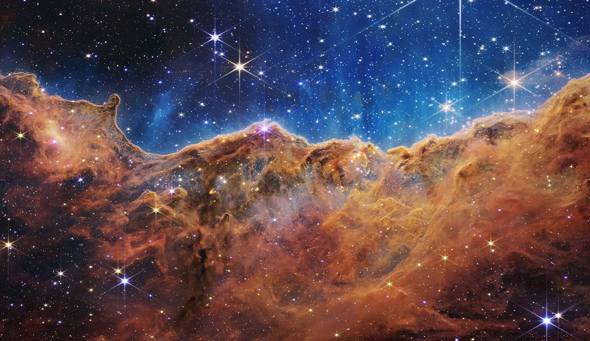

自我介绍 / 个性小档
Cheney
关于我的另一面
星座 · MBTI · 性格

星座
尚未填写
MBTI
尚未填写
02 / 日常里的我
性格与偏好
性格轮廓
- 家乡
- 河南南阳
- 生日
- —
- 性格关键词
- —
- 相处方式
- —
- 社交状态
- —
- 表达方式
- —
- 做事习惯
- —
- 独处时刻
- —
- 一句座右铭
- —
生活偏好
- 生活节奏
- —
- 偏爱的季节
- —
- 喜欢的颜色
- —
- 喜欢的天气
- —
- 偏爱的时段
- —
- 偏爱的口味
- —
- 喜欢的气味
- —
- 喜欢的场景
- —
- 放松方式
- —
- 在意的小事
- —
- 近期目标
- —
- 想学的技能
- —
03 / 喜欢与投入
兴趣与所爱
从这里，走进我的日常。

求知与探索 / 物理物理与宇宙我喜欢物理，尤其是宇宙物理。走进宇宙图景 NASA日常所爱


写下与创造


仰慕的人


追星


04 / 写给自己
自述
这一页，留给自己的话。
性格、近况、想法，或是想成为的样子。